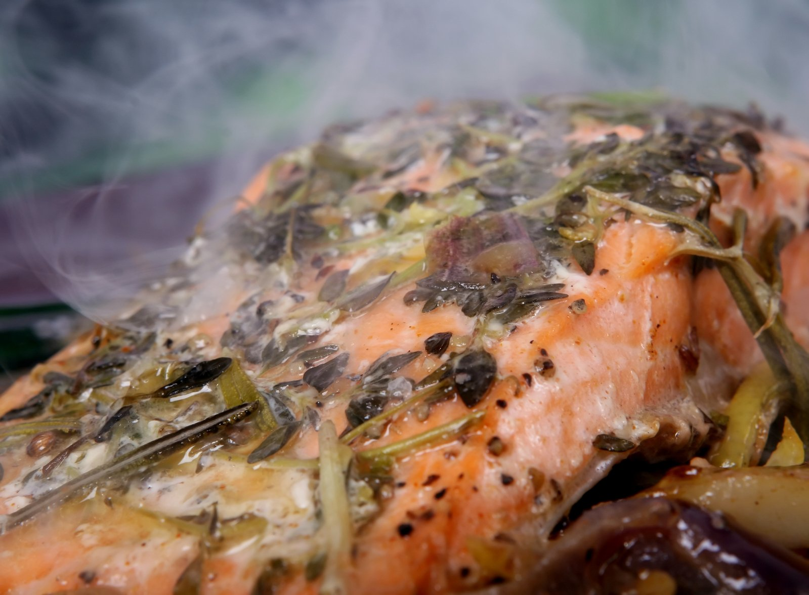

Salmon

Description
Salmon is a common food fish classified as an oily fish with a rich content of protein and omega-3 fatty acids. In Norway – a major producer of farmed and wild salmon – farmed and wild salmon differ only slightly in terms of food quality and safety, with farmed salmon having lower content of environmental contaminants, and wild salmon having higher content of omega-3 fatty acids.
Salmon flesh is generally orange to red, although there are some examples of white-fleshed wild salmon. The natural color of salmon results from carotenoid pigments, largely astaxanthin and canthaxanthin in the flesh.
Ingtedients
- 1/2 cup butter
- 1/2 white onion, sliced
- 2 cloves garlic, minced, divided
- 2 salmon steaks
- 1 cup semi-dry white wine (such as Chablis)
- 1 cup heavy whipping cream
- 1 tablespoon butter
- 2 cups chopped spinach
Steps
- Melt 1/2 cup butter in a large skillet over medium-high heat; cook and stir onion and 1/2 of the garlic, breaking onion into rings, until softened, 5 to 10 minutes. Add salmon to onion mixture and cook until salmon is about 1/4-cooked, about 2 min.
- Pour wine and cream over salmon and cook, stirring lightly and flipping salmon halfway through, until liquid is reduced by 1/2 and salmon flakes easily with a fork, 5 to 10 minutes.
- Melt 1 tablespoon butter in a skillet over medium heat; cook and stir remaining garlic until fragrant and golden, 1 to 3 minutes. Add spinach and cook until spinach is wilted, 3 to 4 minutes.
- Place spinach on 2 serving plates, making a well in the center of each. Arrange each salmon steak in the center of the well and pour sauce over each. Garnish salmon with onion.
Back to main page